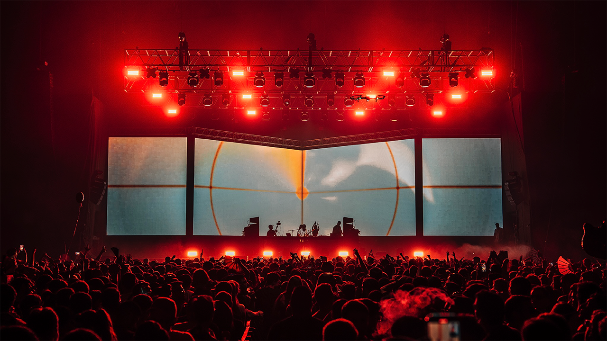

CONTEMPORÁNEAS
La música electrónica deja de ser solo un género o una escena de clubes para convertirse en un lenguaje transversal a casi toda la música popular así como también un medio artístico híbrido entre sonido, imagen, performance y tecnología, una herramienta política y de expresión identitaria.
Escena contemporánea y diversidad
Desde 2010 hasta la actualidad, la música electrónica entra en una etapa profundamente digital, global y diversa. La producción, distribución y difusión musical quedan atravesadas por internet de alta velocidad, las redes sociales, las plataformas de streaming y la cultura audiovisual en tiempo real (plataformas).
El estudio se vuelve completamente digital
Desde 2010 las computadoras portátiles se vuelven estándar. Los DAWs se vuelven accesibles y estables. Se consolida la idea de: “El estudio es una laptop.”
Con todo esto el o la artista puede producir música, mezclar, masterizar, diseñar visuales, publicar y promocionar, todo desde un mismo dispositivo.
Aparecen nuevos formatos de actuación como controladores MIDI accesibles, Live sets híbridos, integración con visuales en tiempo real.
El show electrónico se vuelve audiovisual, inmersivo, interactivo.
En este contexto de democratización de la tecnología también se expanden plataformas de distribución como SoundCloud o BandCamp para la escena más under o de bajo presupuesto y Spotify, YouTube, Apple Music de acceso global.
Los y las artistas ya no necesitan sello discográfico, las escenas globales están conectadas mediante internet, se abren las estéticas libres y transgénero.
Las redes sociales se vuelven parte del proceso creativo y de conexión con colegas y público en general.
Se consolida la figura de artista multimedia. Este período se caracteriza también por la mezcla de estilos y la ruptura de fronteras.
Entre algunos géneros se puede destacar el hyperpop, deconstructed club, footwork, bass music, techno industrial contemporáneo, ambient digital, electrónica experimental híbrida, las escenas queer y transfeministas.
También se diluye la frontera entre electrónica, pop, trap, reggaetón, arte sonoro, performance… Este es el período donde se produce el mayor cambio estructural en términos de género dentro de la música electrónica.
- Aparecen colectivos feministas y queer, los festivales con paridad de género y espacios seguros en la cultura club.
- Se cuestionan lineups sin mujeres, el machismo en las cabinas, y la desigualdad en los cachés.
- Se vuelve visible la participación de mujeres como así también de personas trans, artistas no binarias, escenas queer y disidentes.
La electrónica retoma su tradición como espacio de resistencia, experimentación
y libertad identitaria.
Artistas contemporáneas destacadas
En esta última sección se presentan algunas artistas contemporáneas destacadas, cada una con su estilo y propuesta particular, pero todas ellas representativas de la diversidad y riqueza de la escena electrónica actual.
Electrónica experimental y arte sonoro
- Holly Herndon.
- Caterina Barbieri.
- Moor Mother.
- Arca.
- Sophie.
- Peggy Gou.
- Charlotte de Witte.
- Amelie Lens.
Trabaja con inteligencia artificial y coros digitales. Explora la relación entre cuerpo, voz y tecnología.
Compositora italiana de música modular. Referente del minimalismo electrónico contemporáneo.
Compositora italiana de música modular. Referente del minimalismo electrónico contemporáneo.
Escena club, bass y deconstructed
Productora venezolana. Figura central de la electrónica experimental y el pop alternativo. Referente trans internacional.
Productora escocesa. Figura clave del hyperpop. Revolucionó el diseño sonoro digital.
DJ y productora surcoreana. Figura global del house y techno.
Techno y club contemporáneo
DJ, remezcladora y productora discográfica belga. Figura central del techno global actual.
DJ y productora belga. Una de las artistas más influyentes del techno contemporáneo.

Escenario inmersivo